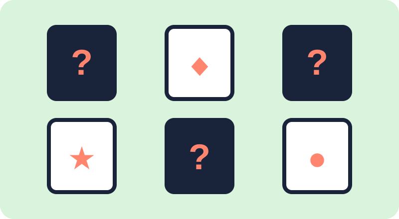
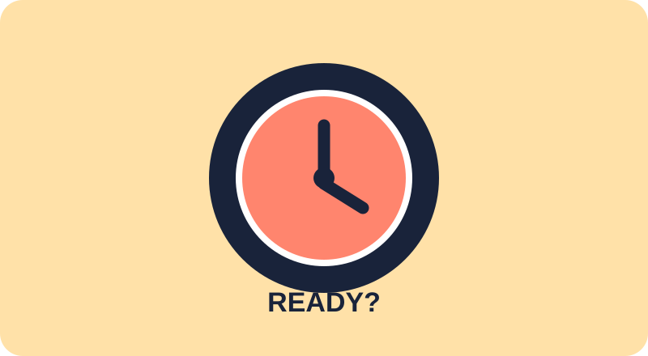
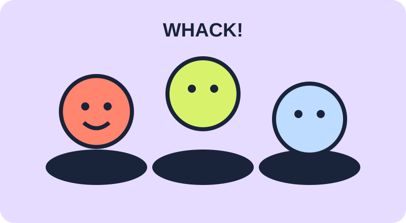
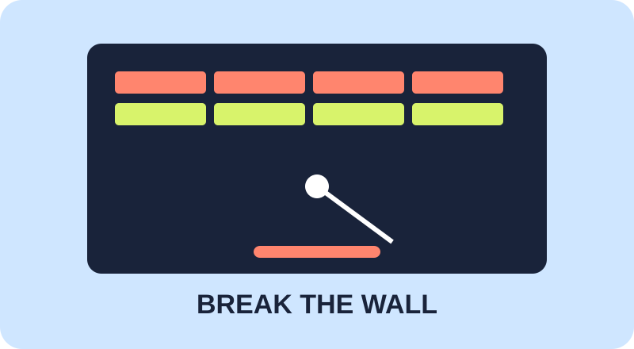
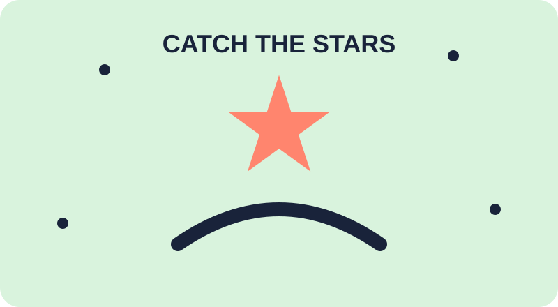

MODE
The arcade floor
挑一台机器
点击可玩的机台就能开始
不需要下载。
贪吃蛇
吃掉食物，越长越强。
井字棋
和朋友或电脑来一局。
恐龙奔跑
跳过障碍，跑得更远。
抓娃娃机
瞄准、下钩，带走奖品。
推币机
看准时机，把硬币推进奖池。
幸运转盘
转一下，看看今天的运气。
光枪射击
瞄准目标，刷新你的分数。

记忆翻牌
翻开相同图案，考验记忆力。

反应挑战
看到变绿就按，越快越好。

打地鼠
20 秒内尽可能多地命中。

弹球打砖块
移动挡板，接住小球打掉砖块。

接星星
点击移动的星星，收集更多奖励。
Game 01 · Endless
贪吃蛇
用方向键或屏幕按钮移动。吃到星星就会变长。
Game 02 · Two players
井字棋
轮流点击格子，先连成三格的人获胜。
Game 03 · One button
恐龙奔跑
按空格键、↑，或点击屏幕让恐龙跳跃。
Game 04 · Timing
抓娃娃机
等爪子对准奖品时按下抓取，看看能不能带走它。
Game 05 · Timing
推币机
在推板进入金色区域时投币，争取把硬币推进奖池。
Game 06 · Chance
幸运转盘
点击按钮转动一次，看看今天的结果。
Game 07 · 30 seconds
光枪射击
开始后点击目标，30 秒内尽可能多地命中。
Game 08 · Memory
记忆翻牌
翻开两张牌，找到相同图案，全部配对就赢。
Game 09 · Reflex
反应挑战
点击开始，等按钮变绿后立刻按下，测测你的反应速度。
Game 10 · 20 seconds
打地鼠
开始后点击冒出来的小地鼠，20 秒内拿到更高分。
Game 11 · Arcade
弹球打砖块
用左右方向键或按钮移动挡板，接住小球并打掉砖块。
Game 12 · Catch
接星星
开始后点击移动的星星，20 秒内收集尽可能多的星星。
Why Break Mode?
07 / 07给大脑一个
短暂的重启。
打开即玩
从首页卡片进入游戏，不需要下载或注册。
完全离线
所有代码都在本地运行，断网也不影响游戏。
适合课间
几分钟一局，放松之后随时回到学习状态。
Built for no signal
没有 Wi-Fi？
正好。
Break Mode 不连接服务器、不使用账号、不加载外部资源。把这个文件夹保存到电脑或手机后，任何时候都可以打开继续玩。
回到游戏列表 ↑